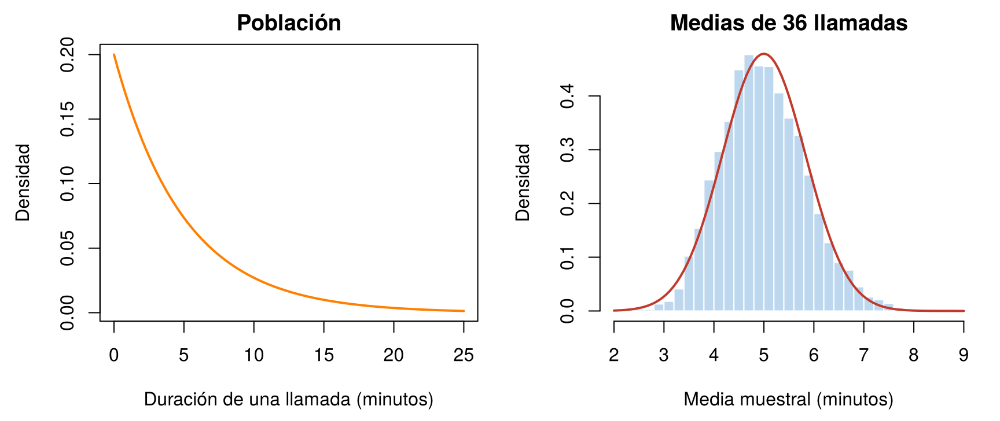
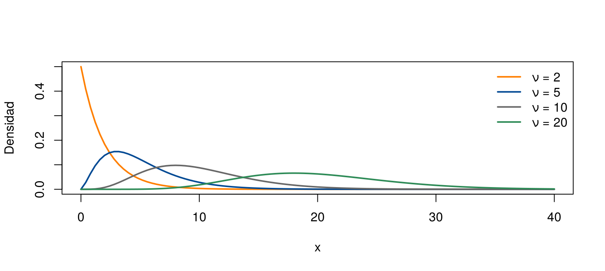
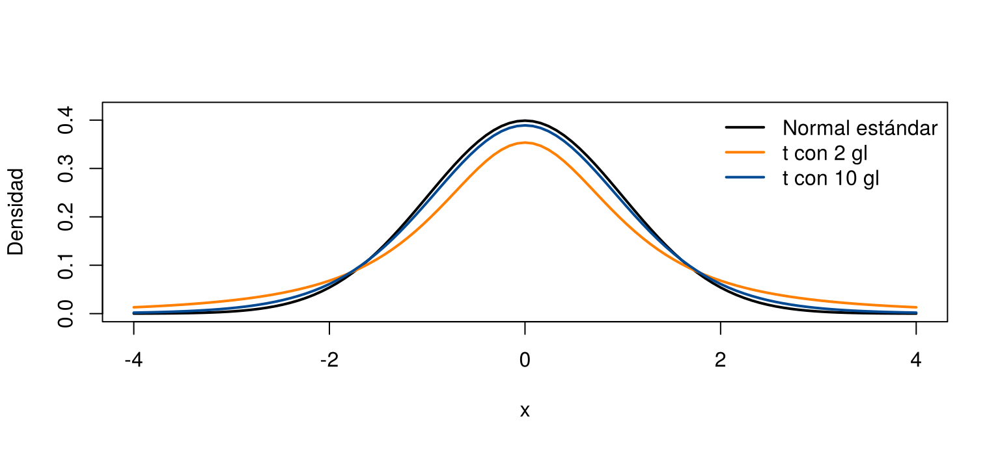
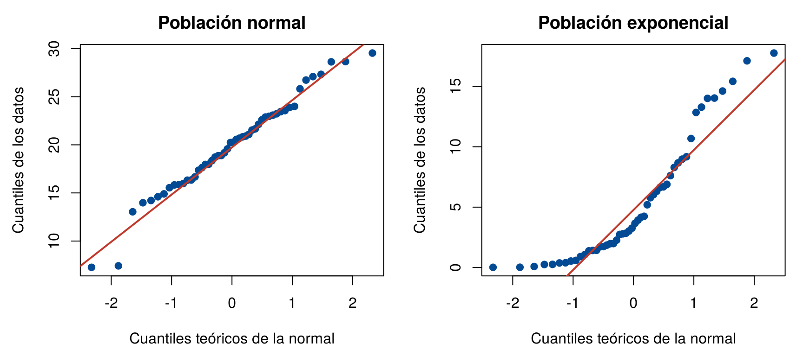

En Conceptos básicos se vio que cada muestra produce una estimación distinta. Un estimador es, entonces, una variable aleatoria: su valor depende de la muestra que salga. Su distribución se llama distribución muestral, y dice qué valores puede tomar el estimador y con qué probabilidad.
Conocer la distribución muestral permite responder preguntas como: ¿qué tan lejos de la media de la población puede quedar la media de una muestra? Esta página presenta la distribución muestral de la media y tres distribuciones que aparecen al trabajar con poblaciones normales: chi-cuadrado, t de Student y F. Los bloques de código se ejecutan en orden.
Si \(X_1, \ldots, X_n\) son i.i.d. con media \(\mu\) y desviación estándar \(\sigma\), la media muestral \(\bar{X}\) cumple, para cualquier forma de la población:
\[ E(\bar{X}) = \mu, \qquad \text{Var}(\bar{X}) = \frac{\sigma^2}{n}, \qquad \sigma_{\bar{X}} = \frac{\sigma}{\sqrt{n}} \]
Estos resultados salen de las propiedades del valor esperado y de la varianza de Valor esperado y varianza. Significan dos cosas:
Con las llamadas de media \(\mu = 5\) minutos y \(\sigma = 5\) minutos, la media de una muestra de \(n = 36\) llamadas tiene
\[ E(\bar{X}) = 5, \qquad \sigma_{\bar{X}} = \frac{5}{\sqrt{36}} = 0.833 \text{ minutos} \]
La simulación lo comprueba: se toman 5 000 muestras de 36 llamadas y se calcula la media de cada una. La distribución de esas 5 000 medias es una aproximación de la distribución muestral de \(\bar{X}\).
set.seed(2026)
medias_36 <- replicate(5000, mean(rexp(36, rate = 1/5)))
mean(medias_36) # cerca de 5[1] 4.997861sd(medias_36) # cerca de 5 / 6 = 0.833[1] 0.8397673par(mfrow = c(1, 2), mar = c(4.5, 4.5, 2, 1))
curve(dexp(x, rate = 1/5), 0, 25, col = "#FF7F00", lwd = 2, main = "Población",
xlab = "Duración de una llamada (minutos)", ylab = "Densidad")
hist(medias_36, breaks = 40, freq = FALSE, col = "#BDD7EE", border = "white", main = "Medias de 36 llamadas",
xlab = "Media muestral (minutos)", ylab = "Densidad", xlim = c(2, 9))
curve(dnorm(x, mean = 5, sd = 5/6), add = TRUE, col = "#C0392B", lwd = 2)
Izquierda: la población de duraciones de llamadas, muy asimétrica. Derecha: la distribución de 5 000 medias de muestras de 36 llamadas, mucho más concentrada y casi simétrica.
Aunque la población es muy asimétrica, la distribución de la media de 36 llamadas tiene forma de campana. Eso no es una casualidad: lo explica el teorema del límite central.
Por ejemplo, ¿qué tan probable es que la media de 36 llamadas supere 6 minutos? En la simulación ocurre en el 11.8 % de las muestras:
mean(medias_36 > 6)[1] 0.118La fórmula \(\sigma/\sqrt{n}\) usa la desviación estándar de la población, que casi nunca se conoce. En la práctica se reemplaza por la de la muestra, \(s\), y se obtiene el error estándar estimado:
\[ \widehat{EE}(\bar{X}) = \frac{s}{\sqrt{n}} \]
Con la muestra de 100 llamadas de Conceptos básicos:
set.seed(2026)
llamadas <- rexp(100, rate = 1/5)
sd(llamadas) / sqrt(100) # error estándar estimado[1] 0.62008575 / sqrt(100) # error estándar real, que aquí se conoce porque la población es simulada[1] 0.5El error estándar estimado, 0.62, es a su vez una estimación: con otra muestra daría otro valor. Usar \(s\) en lugar de \(\sigma\) agrega incertidumbre, y por eso aparece la distribución t de Student, que se presenta más abajo. Para estimadores sin fórmula, como la mediana, el error estándar se estima con el bootstrap.
Si la población es normal, la media muestral es exactamente normal para cualquier \(n\):
\[ \bar{X} \sim N\left(\mu, \frac{\sigma^2}{n}\right) \]
Por ejemplo, si el peso de unas barras es \(N(200, 30^2)\) gramos, la media de 9 barras es \(N(200, 10^2)\), porque \(\sigma_{\bar{X}} = 30/\sqrt{9} = 10\). La probabilidad de que la media de 9 barras pese menos de 190 g es
pnorm(190, mean = 200, sd = 30 / sqrt(9))[1] 0.1586553La distribución chi-cuadrado (\(\chi^2\)) aparece al estudiar la varianza muestral. Tiene un parámetro, sus grados de libertad, \(\nu\). Toma solo valores positivos, es asimétrica a la derecha y su media es \(\nu\). Al aumentar \(\nu\), se vuelve más simétrica.
Relación con la varianza muestral. Si la muestra viene de una población normal con varianza \(\sigma^2\), entonces
\[ \frac{(n - 1)\,S^2}{\sigma^2} \sim \chi^2_{n - 1} \]
El resultado es exacto para poblaciones normales, cualquiera sea \(n\). Si la población no es normal, puede no cumplirse, aun con muestras grandes.
gl <- c(2, 5, 10, 20)
colores <- c("#FF7F00", "#034A94", "#686868", "#2E8B57")
curve(dchisq(x, df = 2), 0, 40, col = colores[1], lwd = 2, ylim = c(0, 0.5), xlab = "x", ylab = "Densidad")
for (i in 2:4) curve(dchisq(x, df = gl[i]), add = TRUE, col = colores[i], lwd = 2)
legend("topright", paste("ν =", gl), col = colores, lwd = 2, bty = "n")
Densidades chi-cuadrado con distintos grados de libertad.
Ejemplo. Una máquina llena bolsas cuyo peso es normal con desviación estándar \(\sigma = 5\) g. Se toma una muestra de \(n = 50\) bolsas. ¿Qué tan probable es que la varianza muestral supere 32.5 g², es decir, que sea 30 % mayor que la verdadera, 25?
\[ P(S^2 > 32.5) = P\left(\chi^2_{49} > \frac{49 \times 32.5}{25}\right) = P(\chi^2_{49} > 63.7) \]
1 - pchisq(49 * 32.5 / 25, df = 49)[1] 0.07724279qchisq(0.95, df = 49) # valor que solo supera el 5 % de las chi-cuadrado con 49 grados de libertad[1] 66.33865La probabilidad es 0.077. Una simulación con 5 000 muestras confirma que el estadístico sigue la chi-cuadrado:
set.seed(2026)
estadistico <- replicate(5000, 49 * var(rnorm(50, mean = 20, sd = 5)) / 25)
mean(estadistico) # cerca de 49, la media de la chi-cuadrado[1] 49.01446mean(estadistico > 63.7) # cerca de 0.077[1] 0.08Si la población es normal, la media muestral estandarizada con la desviación estándar de la población es normal estándar. Pero casi nunca se conoce \(\sigma\), y hay que usar la de la muestra, \(S\). Al hacerlo, el resultado sigue una distribución t de Student con \(n - 1\) grados de libertad:
\[ T = \frac{\bar{X} - \mu}{S / \sqrt{n}} \sim t_{n - 1} \]
El resultado es exacto para poblaciones normales, con cualquier tamaño de muestra. Lo propuso William Gosset en 1908, con el seudónimo Student, cuando trabajaba en la cervecería Guinness.
La t se parece a la normal estándar: es simétrica alrededor de 0 y tiene forma de campana. Pero tiene colas más pesadas, porque usar \(S\) en lugar de \(\sigma\) agrega incertidumbre. Al aumentar los grados de libertad se acerca a la normal estándar.
curve(dnorm(x), -4, 4, lwd = 2, ylim = c(0, 0.42), xlab = "x", ylab = "Densidad")
curve(dt(x, df = 2), add = TRUE, col = "#FF7F00", lwd = 2)
curve(dt(x, df = 10), add = TRUE, col = "#034A94", lwd = 2)
legend("topright", c("Normal estándar", "t con 2 gl", "t con 10 gl"),
col = c("black", "#FF7F00", "#034A94"), lwd = 2, bty = "n")
Densidades t de Student con 2 y 10 grados de libertad, y la normal estándar.
Los cuantiles muestran las colas pesadas. El valor que deja 2.5 % en la cola derecha es mayor para la t que para la normal, y se acerca a 1.96 cuando crecen los grados de libertad:
round(qt(0.975, df = c(5, 10, 30, 100)), 3)[1] 2.571 2.228 2.042 1.984round(qnorm(0.975), 3)[1] 1.96La chi-cuadrado, la t y la F suponen que la población es normal. Antes de usarlas conviene revisar los datos. La herramienta más útil es el gráfico cuantil-cuantil (Q-Q): compara los datos ordenados con los valores que se esperarían si vinieran de una normal. Si los datos son normales, los puntos quedan cerca de una línea recta.
En R, qqnorm() dibuja los puntos y
qqline() agrega la línea de referencia. La figura compara
50 datos de una normal con 50 de una exponencial:
set.seed(2026)
datos_normal <- rnorm(50, mean = 20, sd = 5)
datos_expo <- rexp(50, rate = 1/5)
par(mfrow = c(1, 2), mar = c(4.5, 4.5, 2.5, 1))
qqnorm(datos_normal, main = "Población normal", pch = 19, col = "#034A94",
xlab = "Cuantiles teóricos de la normal", ylab = "Cuantiles de los datos")
qqline(datos_normal, col = "#C0392B", lwd = 2)
qqnorm(datos_expo, main = "Población exponencial", pch = 19, col = "#034A94",
xlab = "Cuantiles teóricos de la normal", ylab = "Cuantiles de los datos")
qqline(datos_expo, col = "#C0392B", lwd = 2)
Gráficos cuantil-cuantil de 50 datos de una población normal (izquierda) y de una exponencial (derecha).
| Lo que se ve en el gráfico Q-Q | Qué indica |
|---|---|
| Puntos cerca de la línea | Los datos son compatibles con una normal |
| Puntos que forman una curva hacia arriba en el extremo derecho | Asimetría a la derecha, como en la exponencial |
| Puntos que se alejan de la línea en los dos extremos | Colas más pesadas que las de la normal, o valores extremos |
| Unos pocos puntos muy alejados | Posibles valores atípicos o errores de digitación |
Existen pruebas de normalidad, como la de Shapiro-Wilk
(shapiro.test()), pero hay que interpretarlas con cuidado.
Con muestras pequeñas casi nunca rechazan, aunque los datos no sean
normales; con muestras grandes rechazan por diferencias mínimas que no
afectan los resultados. Además, que una prueba no
rechace no confirma que los datos sean
normales: solo indica que no hay evidencia suficiente en contra. Por eso
el gráfico Q-Q, junto con el conocimiento del fenómeno, suele ser más
útil que la prueba sola.
La distribución F, propuesta por Ronald Fisher, sirve para comparar dos varianzas. Tiene dos parámetros de grados de libertad, \(\nu_1\) y \(\nu_2\), y toma solo valores positivos.
Si se toman muestras independientes de tamaños \(n_1\) y \(n_2\) de dos poblaciones normales con la misma varianza, el cociente de las varianzas muestrales sigue una F:
\[ F = \frac{S_1^2}{S_2^2} \sim F_{n_1 - 1,\; n_2 - 1} \]
Si las varianzas de las poblaciones son iguales, el cociente debería estar cerca de 1. Al aumentar los grados de libertad, la F se concentra alrededor de 1. Un cociente muy grande o muy pequeño indica que las varianzas son distintas, idea que se usa en las pruebas de hipótesis.
Ejemplo. Con muestras de 20 y 30 piezas de dos máquinas con la misma varianza, ¿qué tan grande tendría que ser \(S_1^2 / S_2^2\) para que solo ocurra en el 5 % de los casos?
qf(0.95, df1 = 19, df2 = 29)[1] 1.958146Un cociente mayor que 1.94 sería poco común si las dos máquinas tuvieran la misma variabilidad.
| Distribución | Uso principal | Funciones |
|---|---|---|
| Normal | Media muestral | pnorm(), qnorm() |
| Chi-cuadrado | Varianza de una población normal | pchisq(), qchisq() |
| t de Student | Media cuando no se conoce \(\sigma\) | pt(), qt() |
| F | Comparación de dos varianzas | pf(), qf() |
| Problema | Causa | Solución |
|---|---|---|
| Usar \(\sigma\) en lugar de \(\sigma/\sqrt{n}\) para la media muestral | Se confunde la dispersión de los datos con la de la media | El error estándar de \(\bar{X}\) es \(\sigma/\sqrt{n}\) |
| Creer que la t solo sirve para muestras pequeñas | Es un mito frecuente | Con población normal, la t es exacta para cualquier \(n\) |
| Usar la chi-cuadrado para la varianza de una población muy asimétrica | Se olvidó el supuesto de normalidad | Revisar la forma de los datos antes de usarla |
| Comparar varianzas con la F sin revisar los supuestos | La F supone poblaciones normales | Revisar la normalidad de las dos muestras |
El tiempo de espera en un banco tiene desviación estándar de 6 minutos. ¿Cuál es el error estándar de la media de 9 clientes? ¿Y de 36? ¿Cuántos clientes hacen falta para que el error estándar sea de 0.5 minutos?
\(6/\sqrt{9} = 2\) minutos y \(6/\sqrt{36} = 1\) minuto. Para \(6/\sqrt{n} = 0.5\) se necesita \(\sqrt{n} = 12\), es decir, \(n = 144\) clientes.
6 / sqrt(c(9, 36, 144))[1] 2.0 1.0 0.5La estatura de los hombres de una ciudad es \(N(172, 7^2)\) cm. ¿Qué tan probable es que una persona mida más de 175 cm? ¿Y que la media de 25 personas supere 175 cm?
1 - pnorm(175, mean = 172, sd = 7) # una persona[1] 0.33411761 - pnorm(175, mean = 172, sd = 7 / sqrt(25)) # media de 25 personas[1] 0.01606229Para una persona la probabilidad es 0.334; para la media de 25, solo 0.016. Las medias varían mucho menos que los datos individuales.
Simule 5 000 muestras de tamaño 5 de una población \(N(10, 2^2)\) y calcule \(T = (\bar{X} - 10)/(S/\sqrt{5})\) en cada una. ¿Qué proporción de los valores supera 2.776? ¿Y 1.96?
set.seed(2026)
t_sim <- replicate(5000, { x <- rnorm(5, 10, 2); (mean(x) - 10) / (sd(x) / sqrt(5)) })
mean(abs(t_sim) > qt(0.975, df = 4)) # 2.776: cerca de 0.05[1] 0.055mean(abs(t_sim) > 1.96) # bastante más que 0.05[1] 0.1306Con \(n = 5\), usar 1.96 de la normal en lugar de 2.776 de la t subestima las colas: la proporción fuera de ±1.96 está entre 0.12 y 0.13, no cerca de 0.05.
Última revisión: 7 de noviembre de 2026.